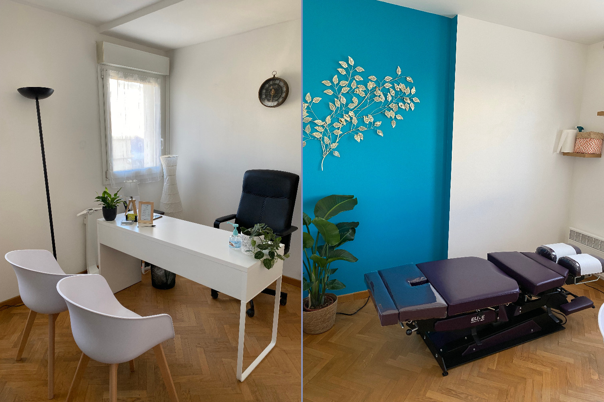
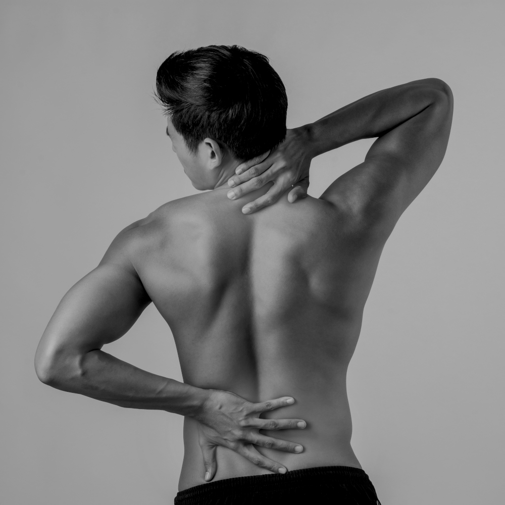

Alexandra
Mallevays
Chiropracteur
Prendre unrendez-vous

Localisation
3 Place du Maréchal Juin78600 Maisons Laffitte
3 minutes à pieds de la gare de RER et 15 min de paris saint lazare en transport
Itinéraire
Tarifs
Première consultation ou consultation de suivi de chiropraxie
60€
Enfant - Première consultation ou consultation de suivi de chiropraxie
50€
Votre facture vous permet de faire une demande de remboursement des séances de chiropraxie auprès de votre mutuelle. Pour plus d'informations, rapprochez-vous de votre mutuelle, vous pouvez également consulter le site de l'Association Française de Chiropraxie.
Lundi
9:00 - 20:30Mercredi
9:00 - 20:30Jeudi
9:00 - 20:30Samedi
14:00 - 19:00
2020
Master STAPS Psychologie, contrôle moteur et performance sportive - Université Paris 11 - Paris-Saclay
2021
Diplôme de chiropraxie - Institut Franco-Européen de Chiropraxie (IFEC)
Membre de l'Association Française de Chiropraxie (AFC)
Chiropracteur diplômée de l'Institut Franco-Européen de Chiropraxie (IFEC, établissement de formation agréé par le ministère de la santé) suite à 6 années d'étude j'ai toujours été intéressée par le fonctionnement du corps humain. Afin de parfaire mes connaissances sur ce sujet , j'ai fait un Master STAPS à l'université Paris Sud axé sur la psychologie et la performance des sportifs.
Mon objectif professionnel :
Je mets un point d'honneur à continuer des formations régulièrement pour toujours mieux comprendre le corps humain. Je suis certifiée en activator, Mckenzie et d'autres techniques chiropratiques telles que SOT et la prise en charge des femmes enceintes et enfants.
Mon rôle en tant que chiropracteur :
Mon but est d'écouter et comprendre vos douleurs et vos attentes, mais également de vous expliquer vos douleurs, leurs conséquences et comment y remédier.
La chiropraxie est une profession de santé manuelle reconnue (loi du 4 Mars 2002 dans le cadre de la loi n2002-303 relative aux droits des malades et à la qualité du système de santé, article 75, parue au Journal officiel du 5 Mars 2002 et par un décret paru au Journal officiel de la République Française depuis le 9 janvier 2011 (décret n° 2011-32).) visant à traiter et prévenir les douleurs liées aux troubles de la colonne vertébrale et de toutes les articulations périphériques (le système musculo-squelettique). Elle cible les articulations en perte de mobilité dont elle restaure le mouvement et lève ainsi les blocages mécaniques de façon efficace, sans douleur, à l’aide d’ajustements vertébraux.
Pour en savoir plus, voici une vidéo explicative.
Mais à qui s'adresse la chiropraxie ? La chiropraxie s'adresse à tous !
- Les nourrissons : pour leur permettre de bien démarrer dans la vie et de reduire les stress perçus lors de l’accouchement.
- Les enfant : pour libérer les tensions pour qu’ils puissent grandir et s’épanouir.
- Les adultes : pour mieux s’adapter à leur environnement et ainsi faire face aux stress extérieurs (travail/ télé travail, mode de vie…) qui peuvent recréer des douleurs ou des tensions.
- Les femmes enceintes : elle permet au corps de mieux appréhender les transformations à venir, et de diminuer les gènes. Mais également aux changements hormonaux avant et après l’accouchement.
- Les sportifs : elle permet d’optimiser les performances sportives et de diminuer les risques de blessures et de fatigues.
- Les séniors : elle maintient un niveau de vie, pour leur permettre de faire tout ce qu’ils désirent.
Mais encore ?
Un geste spécifique
L’ajustement exige un toucher spécifique et une certaine dextérité. Les ajustements sont des manipulations très spécifiques généralement exercées avec les mains ou des appareils spécifiques (Activator ®, Table de flexion /distraction...) afin de redonner aux articulations une meilleure mobilité, diminuer l’inflammation et les tensions musculaires environnantes. Ces manipulations sont sures, efficaces et sans douleurs.
Soulager la douleur
Le corps humain subit de trois types de stress:
- Le stress mécanique (chutes, accidents, mauvaises postures...)
- Le stress chimique (mauvaise alimentation, un manque d'eau...)
- Le stress émotionnel (au niveau professionnel, social, ou familial...)
Les principaux symptômes traités en chiropraxie sont :
Douleurs articulaires
(lombalgies, dorsalgies, cervicalgies...)

Douleurs au dos

(douleurs de genoux, épaules, chevilles, coudes, poignets...)
Douleurs musculaires
(tendinopathies, épines calcanéennes...)
Douleurs neurologiques
(névralgies, sciatiques, cruralgies... )
Merci des soins que vous m'avez prodigué, et du bien-être qu'ils m'ont apporté. Vous êtes une excellente professionnelle. Vous avez beaucoup de qualités pour cela.
La séance d'hier m'a fait beaucoup de bien, j'ai moins mal malgré les tensions au niveau des trapèzes. Je vais penser à faire mes étirements. Je tenais à vous remercier pour votre bienveillance, votre écoute et les sois que vous m'avez prodigué avec respect et délicatesse.
Nos dernières séances ont été bénéfiques. Merci encore pour ces superbes séances.